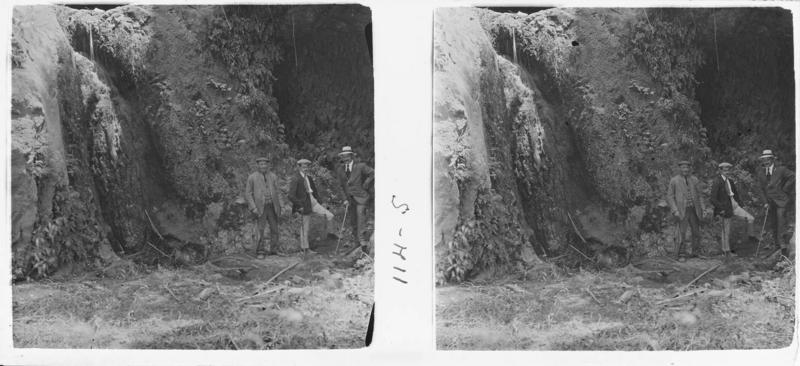

Termes romanes
-

Descripció
De l'antiga estació balneària de Caldes n'han restat les termes romanes, situades al bell mig de la població actual.
-
Història
La vila de Caldes fou en època romana una estació balneària, fundada sobre les deus d'aigua calenta que hi brollen, i entorn de la qual es desenvolupà un nucli urbà d'una importància considerable a l'Alt Imperi.
-

Arqueologia
L'origen de l'ús d'aquest se situa pels volts de finals del segle II aC o inicis del segle I aC, data que ve donada per la ceràmica campaniana i l'àmfora itàlica.
-
 Visites
Consulta horaris, preus i dades de contacte.